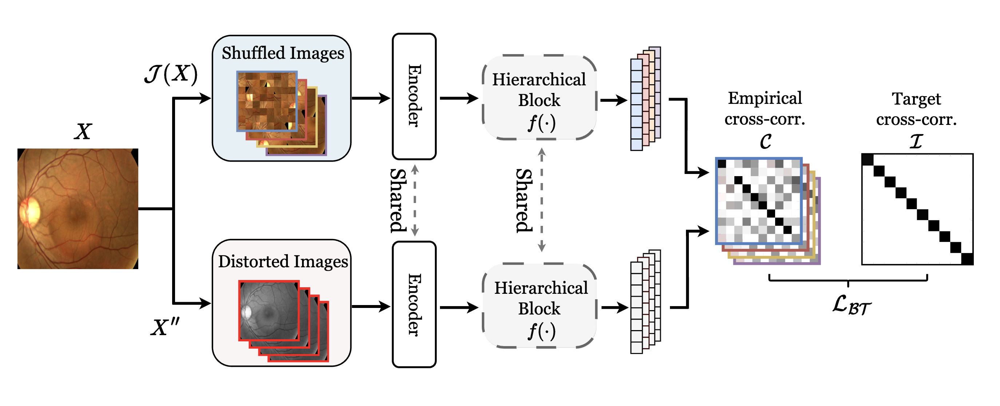
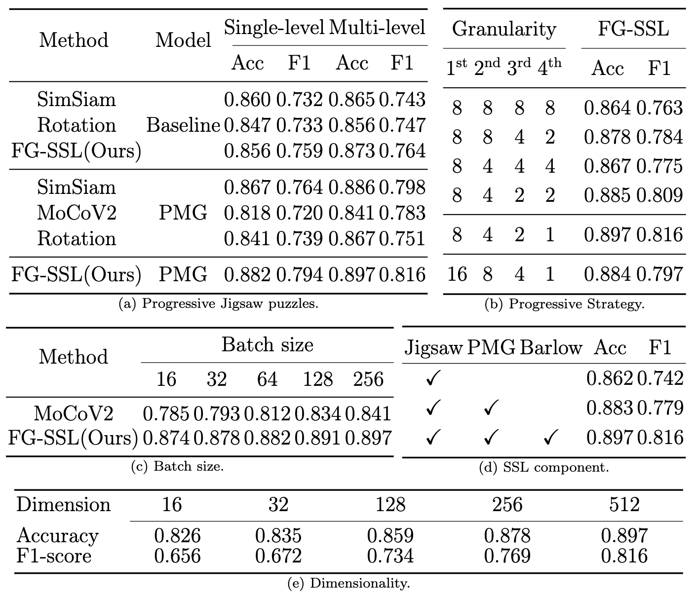
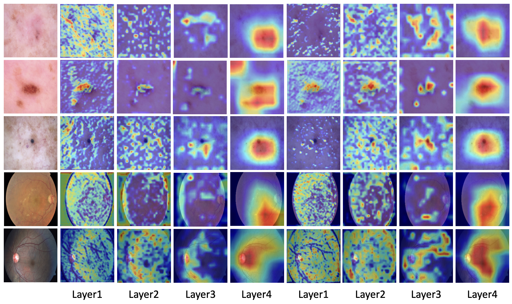

Overall workflow of the proposed FG-SSL method. We generate Jigsaw puzzles and distorted images from an original training sample to learn fine-grained self-supervision. By comparing the features obtained from fine-grained Jigsaw puzzles and distorted images, we minimize the empirical cross-correlation with the identity matrix for progressively training our networks. For further details, please refer to our paper.

To show the effectiveness of the progressive Jigsaw puzzles, we compare ours with other self-supervised learning methods in Table 2a.

Grad-CAM [44] visualization. A*, B*, and C* represent the result of sequentially adding the Rotation [41], SimSiam [42], and BarlowTwins [23] methods with the proposed fine-grained self-supervised learning. At the same time, A, B, and C are taken from the baseline networks without our self-supervised learning.
@article{park2024fine,
title={Fine-Grained Self-Supervised Learning with Jigsaw puzzles for medical image classification},
author={Park, Wongi and Ryu, Jongbin},
journal={Computers in Biology and Medicine},
volume={174},
pages={108460},
year={2024},
publisher={Elsevier}
}